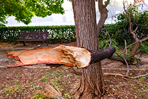
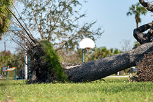

Most homeowners and tree companies in Monmouth County don’t want to jump straight to tree removal. In fact, the first instinct is usually to save the tree at all costs. A little trimming, maybe some cleanup, and everything should be fine, right? Sometimes that works. Other times, the tree is already beyond the point where maintenance and treatment will help. In Monmouth County, trees face a unique mix of challenges. Older neighborhoods are filled with mature trees that have been standing for decades. Add in heavy rain, strong coastal storms, and shifting soil conditions, and even the healthiest looking tree can develop problems over time. That’s why tree removal in Monmouth County is not always about convenience. In many cases, it becomes the safest and most practical option. Knowing when you’ve reached that point can help you avoid costly damage and unnecessary risk.

When the Structure Is CompromisedOne of the clearest signs that tree removal may be necessary is structural damage. Large cracks in the trunk, deep splits where branches meet, or a tree that has partially broke during a storm point to instability. Once the structure of a tree is compromised, it cannot repair itself in the way you might hope. You see a tree that still has green leaves and assume it is healthy enough to make a comeback. But structure matters more than appearance. A weakened trunk or major limb can fail without warning, especially during the next storm. In these cases, trimming is not a long term solution. Removal is often the safer path.
When the Tree Is Already Dead or Dying
A dead tree does not always fall right away. Some can stand for years, slowly becoming more brittle and unstable. Others begin shedding large branches long before the trunk gives out. If a tree is no longer producing leaves during the growing season or shows widespread decay, it may already be too far gone. Dying trees can also attract insects and disease, which may spread to nearby healthy trees. Removing one problem tree can sometimes protect the rest of your property.
When It Is Too Close to Your Home or Structures
Location plays a big role in deciding whether a tree should stay or go. A tree that leans slightly in an open yard may not pose much risk. The same tree leaning toward your house, garage, or power lines, however, is a different story. If a tree has the potential to strike a structure, removal may be the most responsible choice, even if the tree is still partially healthy.
When Root Damage Becomes a Problem

Roots are easy to overlook because most of the activity happens underground. But when roots start lifting driveways, cracking sidewalks, or affecting foundations, it becomes a serious concern. In some cases, cutting roots to solve the issue can actually make the tree less stable. If the root system is compromised or interfering with your property, removal may be the best long term solution. Addressing it early can prevent more expensive repairs down the line.
When Storm Damage Is Too Severe
Storms are one of the biggest reasons homeowners in this area call for tree removal in Monmouth County. High winds, saturated soil, and heavy rain can push already stressed trees past their limit. Sometimes the damage is obvious, like a tree that has split or fallen. Other times, it is less noticeable. A tree may shift slightly, lose major limbs, or suffer internal stress that weakens it moving forward. After a significant storm, it is always a good idea to assess your trees carefully. If the damage affects the overall stability of the tree, removal is often safer than trying to salvage it.
Making the Right Call for Your Property
It is not always easy to decide what to do with a problem tree. Many homeowners feel attached to the trees on their property, especially ones that have been there for years. But when a tree becomes unstable, diseased, or hazardous, holding onto it can create more problems than it solves.
Tree removal in Monmouth County is often about preventing damage before it happens. Whether it is a structural issue, root problem, or storm related damage, acting early can save you time, money, and stress. If something in your yard does not look right, it is worth taking a closer look. Contact Ben Bivins Tree Experts for all of your tree removal in Monmouth County needs!